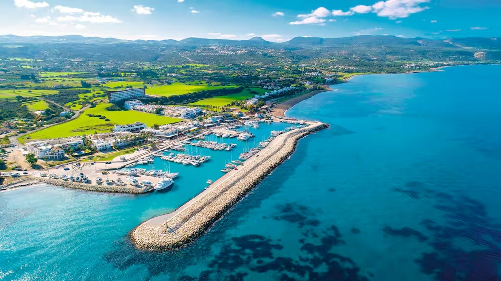
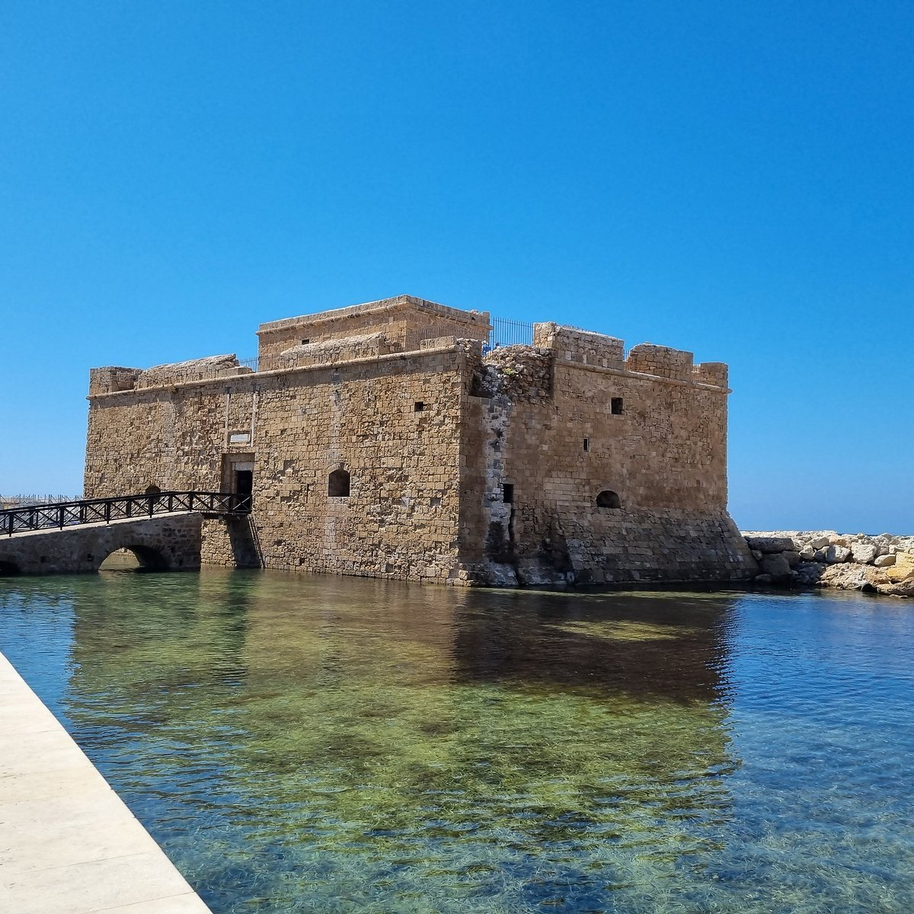
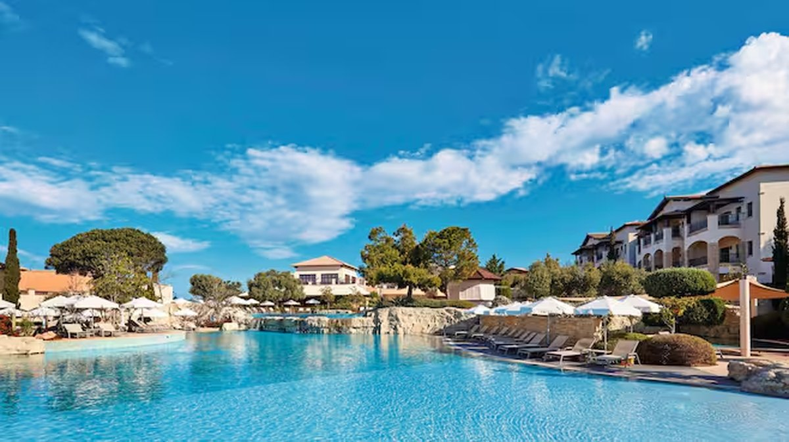
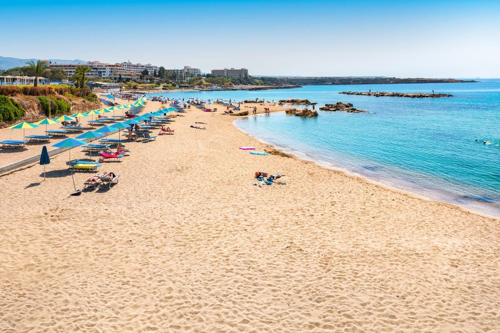
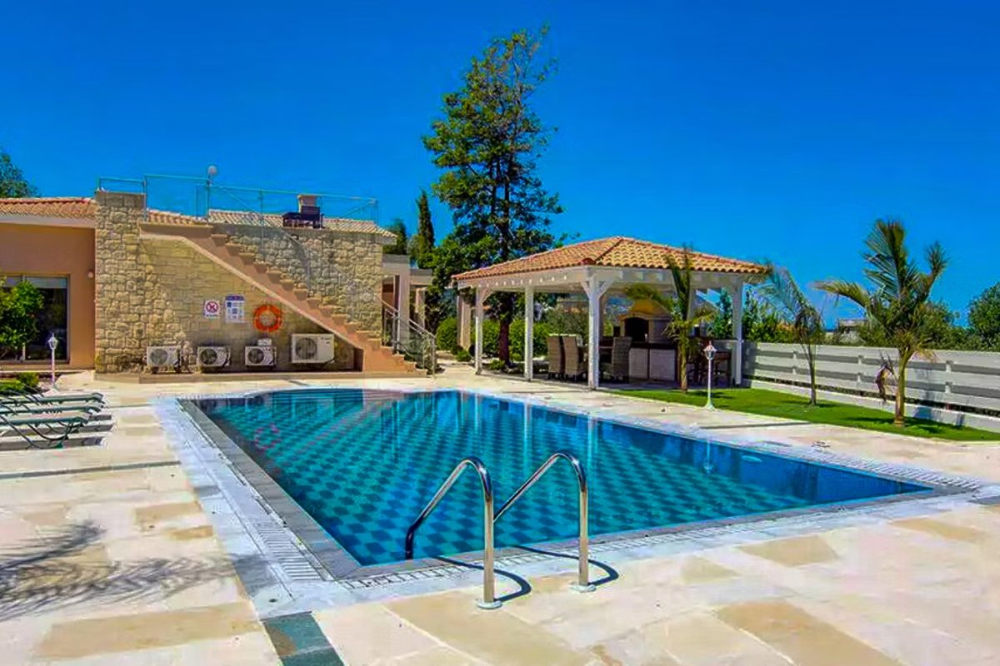
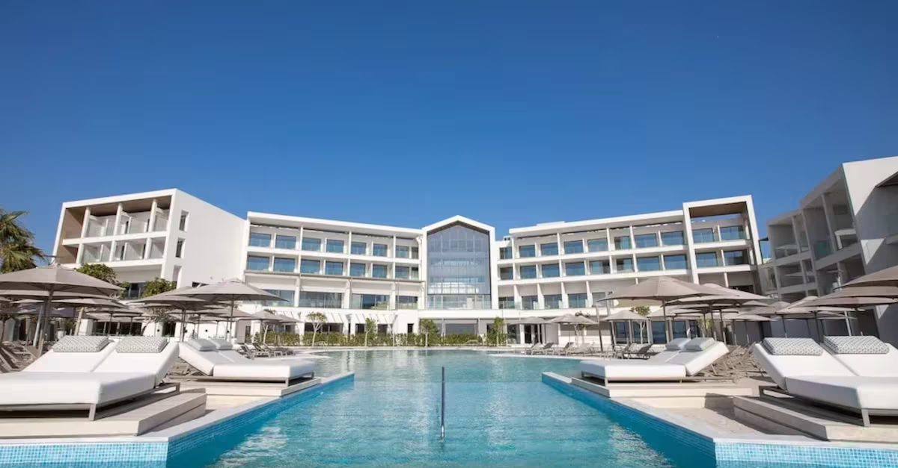
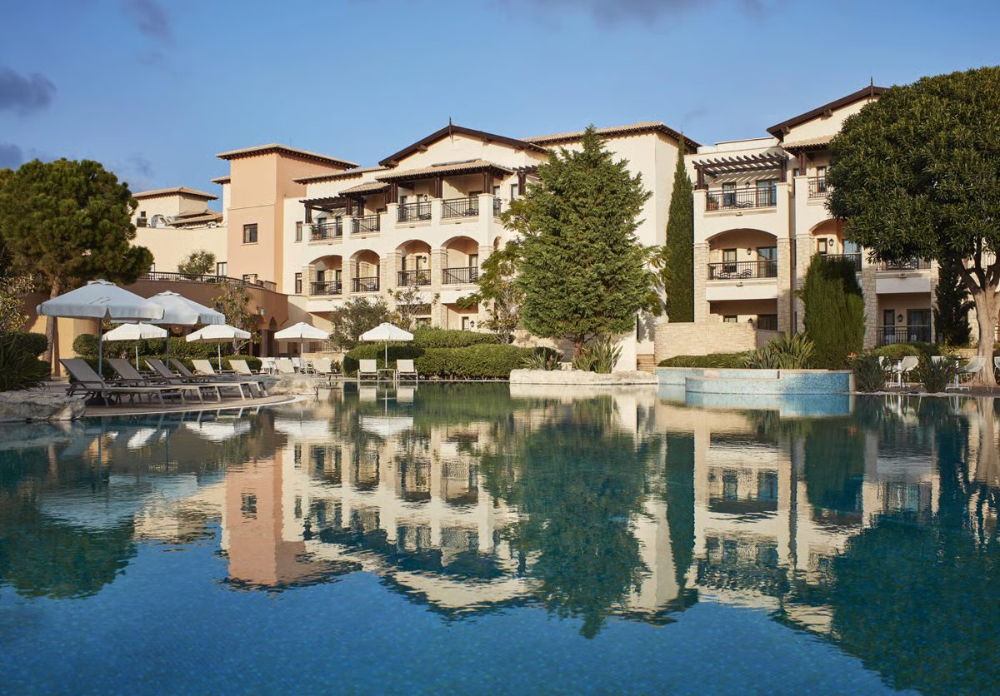
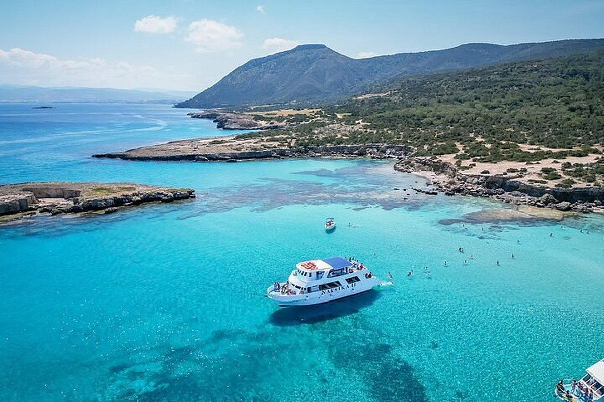
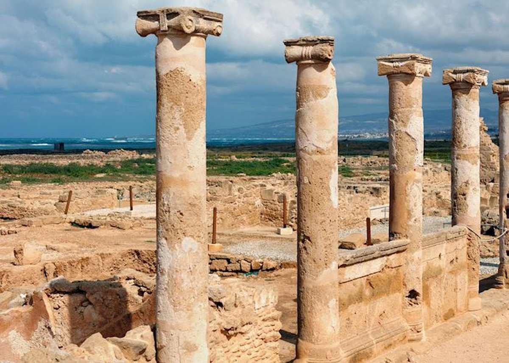
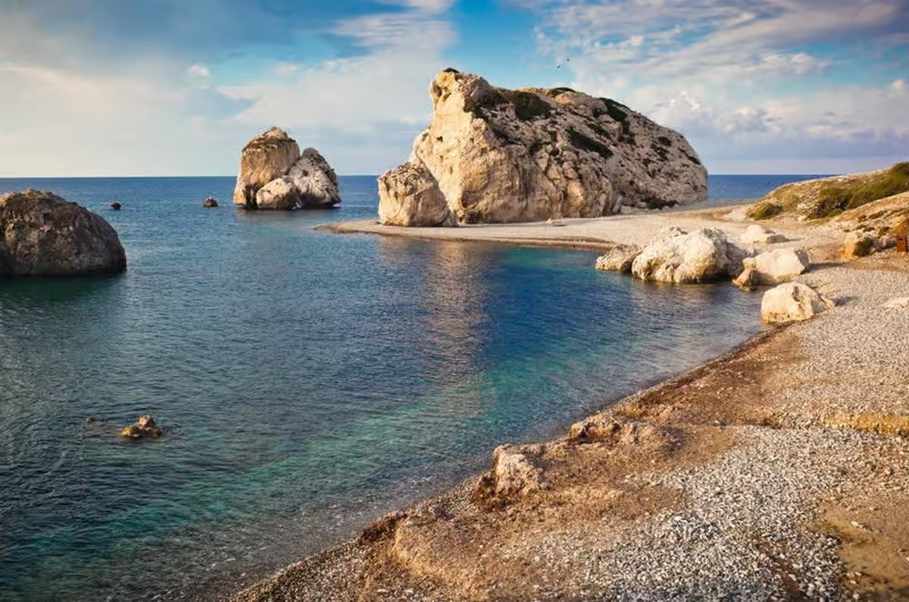

Weather by month, where to stay, things to do and what it actually costs, everything you need to plan a trip to this part of Cyprus.
Paphos sits on the south west coast of Cyprus and is one of the island's most popular bases, with a working harbour, an old town, and easy access to the Akamas Peninsula and the Blue Lagoon. Latchi, a small harbour village further north, makes a quieter alternative if you'd rather be closer to the coastline and away from the busier resorts.
Want beaches, boat trips and a slower pace? Base yourself around Latchi or Polis. Want restaurants, nightlife and easy transfers? Stick closer to Paphos town or Kato Paphos.
Paphos works as a city break or a full week, so how long you go for really depends on what you want out of it. Four or five nights is enough to cover the main sights, a couple of beach days and one boat trip. A full week or more gives you time to properly slow down, explore further afield towards Akamas and the Troodos foothills, and not feel like you're rushing the last few days.
It suits couples and groups of friends looking for a relaxed base with good food and easy days out, and it works well for families too, with calmer beaches than some of the busier Cypriot resorts and plenty of shallow, sheltered spots for younger children.
Paphos International Airport (PFO) is the nearest airport, with direct flights from most major UK airports taking around 4.5 to 5 hours. Larnaca Airport is the other option if a direct Paphos flight doesn't line up with your dates, though it means a longer transfer of around an hour and a half to two hours to reach Paphos or Latchi.
From Paphos Airport, it's roughly 15 to 20 minutes to Paphos town and Kato Paphos, and closer to 45 minutes to an hour up to Latchi or Polis.
Book an airport transfer or hire car in advance for the Latchi and Polis area. Taxis can be booked on arrival, but they're pricier and less predictable than sorting transport before you fly.
Paphos has a typically Mediterranean climate: hot, dry summers and mild, wetter winters. These are long-term averages, so treat them as a guide rather than a forecast for your specific dates.
| Month | Avg high | Avg low | Sea temp | What to expect |
|---|---|---|---|---|
| January | 16°C | 10°C | 17°C | Mild and the wettest month, but still sunny spells |
| February | 16°C | 11°C | 17°C | Cool, drier than January |
| March | 18°C | 12°C | 17°C | Warming up, countryside at its greenest |
| April | 20°C | 14°C | 18°C | Pleasant and comfortable for sightseeing |
| May | 24°C | 17°C | 20°C | Warm, sea still cool for most swimmers |
| June | 27°C | 21°C | 24°C | Hot and dry, sea warming up nicely |
| July | 29°C | 24°C | 27°C | Peak heat, dry, great sea temperatures |
| August | 30°C | 24°C | 28°C | Hottest month, very dry, busiest time to visit |
| September | 27°C | 22°C | 27°C | Still hot, sea at its warmest |
| October | 24°C | 19°C | 24°C | Cooling gently, still very swimmable |
| November | 21°C | 15°C | 21°C | Mild, occasional rain returns |
| December | 17°C | 12°C | 18°C | Cool and wetter, still mild by UK standards |
Figures are long-term monthly averages for the Paphos area.
July and August are the hottest and busiest months, with the highest prices and the most crowded beaches and restaurants. If you'd rather have a bit more space and don't mind slightly cooler evenings, May, June, September and October give you reliably warm, dry weather, a warm sea, and noticeably better value on flights and hotels.
Winter (December to February) is mild by UK standards but too cool for most people to swim comfortably, so it suits a quieter trip focused on sightseeing, walking and local food rather than a beach holiday.
This part of Cyprus covers a few very different areas, so where you base yourself matters more than usual.

A small harbour village and its nearby town, both quieter and more low-key than Paphos. Good for villas, boat trips and easy access to the Akamas Peninsula and Blue Lagoon.

The main hub, with the harbour, old town, restaurants and most of the nightlife. Best for a first trip or if you want everything within easy reach.

A resort area inland from Kouklia with golf, spa facilities and coastal views. Suits a quieter, resort-based stay rather than exploring independently.

A popular family beach resort area a short drive from Paphos, with a sheltered sandy bay and plenty of restaurants right along the front.
Make sure you visit Da Vinci for an ice cream, and pop into Jumbo at the Paphos Kings Mall for holiday essentials like lilos and pool inflatables.
Hiring a car is the easiest way to see beyond your base, especially for the Akamas Peninsula, the Blue Lagoon boat trips from Latchi harbour and the villages up in the Troodos foothills, which aren't well covered by public transport. Cyprus drives on the left, and most UK licences are valid, so it's a straightforward option if you're comfortable driving abroad.
If you'd rather not drive, taxis are widely available and metered, and there are local bus routes connecting Paphos, Coral Bay and the surrounding resort areas, though services are less frequent and don't run as far as Latchi or Polis. Most hotels and villas can also arrange transfers and day trips.
A shortlist of the bookable tours and activities around Paphos and Latchi worth having on the radar, all four things Jake would actually recommend booking.
Four picks across budgets, from a self-catering villa to a 5-star resort, all in the wider Paphos area and all well-rated on Tripadvisor.

A 3 bedroom villa sleeping up to 6, with a private pool looking out to the sea and mountains, and a shaded outdoor dining area with a BBQ. About a 7 minute walk to the beach, with restaurants close by.
A small, well-run hotel up in Paphos old town with sea views over the harbour and castle. Consistently one of the best-reviewed budget stays in the area.

A TUI Blue-branded all-inclusive resort in Kissonerga, close to Coral Bay. A solid choice for families wanting everything sorted and on-site.

A resort in Kouklia with golf, a spa and sweeping views over the coast. A good option if you'd rather stay on-site and not worry about transfers.
A few of the highlights worth building a day around, beyond just the beach.

Turquoise water inside a national park with no roads in, so it's boat or jeep only. One of the best swimming spots on the island.

Roman mosaics, the Tombs of the Kings and Paphos Castle down by the harbour, all within easy walking distance of each other.

The legendary birthplace of Aphrodite, a dramatic sea stack just off the coast road between Paphos and Limassol, worth a stop even just for photos.

A sheltered, family-friendly sandy beach with sunbeds and a strip of restaurants right on the front, easy if you want a straightforward beach day.
Hire a car for at least a couple of days if you can. A lot of the best spots around Akamas and the Troodos foothills aren't well served by public transport.
Cyprus uses the euro, so prices below are in euros with a rough pound equivalent alongside, based on averaged, crowd-sourced data. Treat these as a general guide for budgeting your spending money, not an exact price list.
| Item | Typical price |
|---|---|
| Meal at an inexpensive restaurant | €15 (about £13) |
| Three course meal for two, mid-range restaurant | €50 (about £43) |
| Draft beer, pint, restaurant | €3.75 (about £3.20) |
| Cappuccino | €3.21 (about £2.75) |
| Bottled water | €1.04 (about £0.90) |
| Bottle of mid-range wine | €6.00 (about £5.15) |
| Taxi, starting fare | €10 (about £8.60) |
| Petrol, per litre | €1.53 (about £1.30) |
Source: crowd-sourced averages via Numbeo, checked at time of writing. Euro to pound conversion is approximate and will move around.
Card is accepted almost everywhere in Paphos, but keep some cash on you for smaller tavernas, beach bars and taxis, especially outside the main tourist strip.
The essentials, at a glance.
| Currency | Euro (€) |
| Plug type | UK three-pin (type G), same as home |
| Language | Greek, with English widely spoken in tourist areas |
| Flight time from the UK | About 4.5 to 5 hours direct |
| Time difference | 2 hours ahead of the UK |
| Driving | Left-hand side, same as the UK |
I can build a trip to this exact part of Cyprus, or somewhere else entirely, around what you're after.